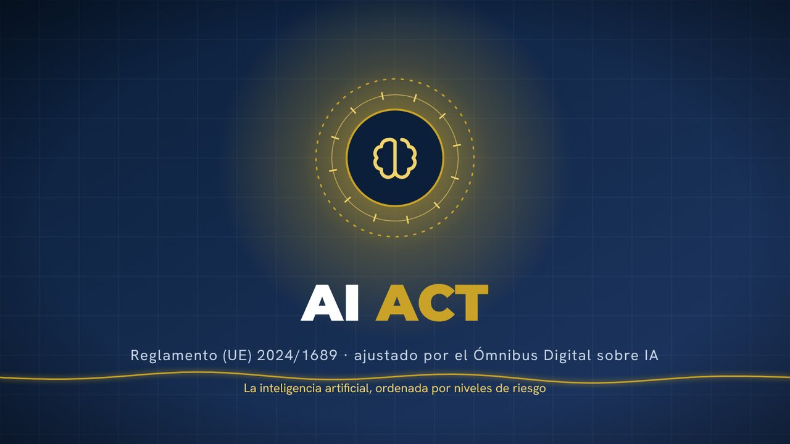

ARG
ARGARGOS › Normativa en 4 minutos › Reglamento de IA
El Reglamento de IA en 4 minutos: niveles de riesgo, fechas tras el Ómnibus y qué hacer en España
El Reglamento europeo de inteligencia artificial ordena la IA por niveles de riesgo y se aplica con carácter general desde agosto de 2026. Tras el Ómnibus Digital, el alto riesgo del anexo III llega el 2 de diciembre de 2027. En España, un sistema de IA responde ante cuatro frentes a la vez.

- 0:00Decisiones invisibles
- 0:15Las multas
- 0:43En España
- 1:15AI Act
- 1:29Cuatro niveles
- 2:00Alto riesgo
- 2:22Fechas
- 2:47Europa
- 3:07Cuatro frentes
- 3:38Qué hacer
Datos clave
- Multas de hasta 35 millones de euros o el 7 % de la facturación mundial.
- 2 de agosto de 2026: aplicación general y obligaciones de transparencia.
- 2 de diciembre de 2026: acaba el periodo de gracia para marcar el contenido generado.
- 2 de diciembre de 2027: alto riesgo del anexo III. 2 de agosto de 2028: IA integrada en productos regulados.
- Cuatro niveles: inaceptable (prohibido), alto riesgo, transparencia y riesgo mínimo. La clasificación se hace por finalidad, no por tecnología.
- Alto riesgo exige gestión de riesgos, datos con control de sesgos, documentación, registro de eventos y supervisión humana (artículos 9 a 15).
- En España el Reglamento se aplica sin ley española: el proyecto decayó en octubre de 2026 y la agencia de supervisión existe sin régimen sancionador nacional.
- 10 millones de euros: multa de la AEPD a un sistema de reconocimiento facial, por la vía del RGPD.
Transcripción
Texto completo de la locución
0:00 · Decisiones invisibles
Un algoritmo descarta tu currículum. Otro decide tu crédito. Otro reconoce tu rostro en un aeropuerto. Nadie te lo ha explicado. A partir de ahora, alguien tendrá que hacerlo.
0:15 · Las multas
El Reglamento europeo de Inteligencia Artificial fija multas de hasta 35 millones de euros, o el 7% de la facturación mundial. Desde agosto de 2026 se aplica con carácter general. Avisar de que se habla con una IA, etiquetar las ultrafalsificaciones y formar a los equipos. Y en España, las multas de más de 10 millones por sistemas de IA ya existen, por la vía del RGPD.
0:43 · En España
En España, el frente está abierto en varios sitios a la vez. El Reglamento se aplica sin ley española. El proyecto decayó en octubre de 2026. La Agencia Española de Supervisión de la Inteligencia Artificial existe, pero sin régimen sancionador nacional. La Agencia de Protección de Datos ya actúa sobre biometría y decisiones automatizadas. Cada empresa debe informar por escrito a sus trabajadores de los algoritmos que deciden sobre ellos. Y quien cambia la finalidad de un sistema pasa a ser proveedor con todas sus obligaciones.
1:15 · AI Act
El Reglamento de IA, ajustado por el Ómnibus Digital, ordena la inteligencia artificial por niveles de riesgo. La clasificación lo decide todo. Y se hace por finalidad, no por tecnología.
1:29 · Cuatro niveles
Cuatro niveles, inaceptable, prohibido, como la puntuación social o el reconocimiento de emociones en el trabajo. Alto riesgo, empleo, crédito, educación, biometría o infraestructuras críticas con requisitos estrictos. Transparencia, avisar de que se habla con una IA y marcar el contenido sintético. Y riesgo mínimo, que es la mayoría de los usos empresariales. En todos, el deber de alfabetizar en inteligencia artificial.
2:00 · Alto riesgo
El alto riesgo exige un sistema de gestión completo. Gestión de riesgos durante todo el ciclo de vida. Datos pertinentes y representativos con control de sesgos. Documentación técnica y registro automático de eventos. Y supervisión humana, precisión, robustez y ciberseguridad. Artículos 9 a 15 del reglamento.
2:22 · Fechas
Las fechas, tras el ómnibus. 2 de agosto de 2026. Aplicación general y transparencia. 2 de diciembre de 2026. Acaba el periodo de gracia para marcar el contenido generado. 2 de diciembre de 2027. El alto riesgo del anexo III. Y 2 de agosto de 2028. La IA integrada en productos regulados.
2:47 · Europa
En Europa, cada país avanza a su ritmo. Alemania ya tiene su ley nacional en vigor. Italia también. Países Bajos tiene su anteproyecto en consulta. Francia lo debate en el Parlamento. Y España, pionera con la primera agencia de supervisión de IA de Europa, espera una nueva ley.
3:07 · Cuatro frentes
En España, un sistema de IA responde ante cuatro frentes a la vez. El reglamento de IA, el RGPD, la normativa laboral y, en el sector público, la transparencia algorítmica. La Agencia Española de Supervisión de la Inteligencia Artificial, en A Coruña, ha publicado 16 guías de cumplimiento. La Agencia de Protección de Datos ya multó con 10 millones de euros un sistema de reconocimiento facial. Y el Tribunal Supremo reconoció el acceso al código fuente de un algoritmo público.
3:38 · Qué hacer
¿Qué hacer ya? Inventariar y clasificar cada sistema de IA, cumplir la transparencia, formar a los equipos e informar a los trabajadores. ARGOS lo demuestra con evidencia. Registro de eventos, supervisión humana y veredictos trazables con la IA ejecutándose en local. Reglamento de IA. La IA propone. La persona decide.
Preguntas frecuentes
¿Desde cuándo se aplica el Reglamento de IA?
Se aplica con carácter general desde el 2 de agosto de 2026. Tras el Ómnibus Digital (Reglamento (UE) 2026/1744), las obligaciones de alto riesgo del anexo III llegan el 2 de diciembre de 2027 y las de la IA integrada en productos regulados, el 2 de agosto de 2028.
¿Cuáles son los niveles de riesgo?
Cuatro: inaceptable, que está prohibido (por ejemplo, la puntuación social o el reconocimiento de emociones en el trabajo); alto riesgo, con requisitos estrictos (empleo, crédito, educación, biometría o infraestructuras críticas); transparencia, que obliga a avisar de que se habla con una IA y a marcar el contenido sintético; y riesgo mínimo, que es la mayoría de los usos empresariales.
¿Qué exige un sistema de alto riesgo?
Un sistema de gestión completo: gestión de riesgos durante todo el ciclo de vida, datos pertinentes y representativos con control de sesgos, documentación técnica, registro automático de eventos, supervisión humana, precisión, robustez y ciberseguridad (artículos 9 a 15).
¿Qué obligaciones tienen ya todas las empresas?
Avisar de que se habla con una IA, etiquetar las ultrafalsificaciones y formar a los equipos en inteligencia artificial (alfabetización). En España, además, cada empresa debe informar por escrito a sus trabajadores de los algoritmos que deciden sobre ellos.
¿Hay ya multas por IA en España?
Sí, por la vía del RGPD: la AEPD ha multado con 10 millones de euros un sistema de reconocimiento facial. El régimen sancionador propio del Reglamento de IA está pendiente de una ley española, porque el proyecto decayó en octubre de 2026.
¿Qué pasa si cambio la finalidad de un sistema de IA?
Quien cambia la finalidad de un sistema pasa a ser proveedor, con todas sus obligaciones.
Fuentes oficiales
- Reglamento (UE) 2024/1689, de Inteligencia Artificial (EUR-Lex)
- Reglamento (UE) 2026/1744, Ómnibus Digital sobre IA (EUR-Lex)
- Agencia Española de Supervisión de la Inteligencia Artificial (AESIA)
Sigue con
 RGPD y LOPDGDD
RGPD y LOPDGDDEl RGPD y la LOPDGDD en 4 minutos: qué exigen hoy y qué se sanciona en España
 EHDS
EHDSEl EHDS en 4 minutos: qué cambia el Espacio Europeo de Datos Sanitarios para hospitales y empresas de salud
 NIS2
NIS2NIS2 en 4 minutos: qué exige, multas, fechas y la situación singular de España
Locución y música generadas con inteligencia artificial (art. 50 del Reglamento de IA). Información general, no constituye asesoramiento jurídico; situación a noviembre de 2026, según las fichas de regulación de Software in a Box. Clips de vídeo con licencia de Envato.
Para incrustar esta presentación en otra web: <iframe src="https://argos.softwareinabox.eu/normativa/reglamento-ia/presentacion/?embed=1" width="960" height="540" allow="autoplay; fullscreen" title="El Reglamento de IA en 4 minutos: niveles de riesgo, fechas tras el Ómnibus y qué hacer en España"></iframe> con un enlace a esta página.
También disponible en: DeutschFrançaisFrançais (Belgique)ItalianoNederlandsNederlands (België)PortuguêsDansk